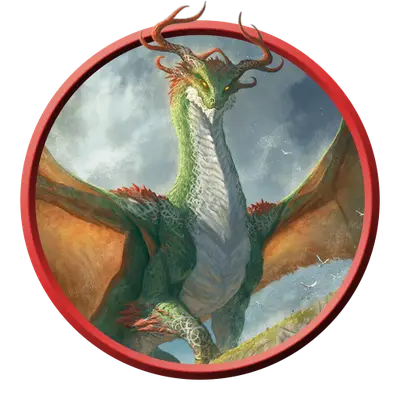

Взрослый духовный дракон
Adult Spirit Dragon
Огромный Дракон, Нейтральный

Класс Защиты 18 Инициатива +7 (17)
Хиты 207 (18к12 + 90)
Скорость 40 футов, Полёта 80 футов, Копания 30 футов
| мод | спас | ||
|---|---|---|---|
| СИЛ | 22 | +6 | +6 |
| ЛОВ | 15 | +2 | +7 |
| ТЕЛ | 21 | +5 | +10 |
| мод | спас | ||
|---|---|---|---|
| ИНТ | 20 | +5 | +5 |
| МДР | 15 | +2 | +2 |
| ХАР | 19 | +4 | +4 |
Сопротивление урону Некротический
Чувства Тёмное зрение 120 футов, пассивное Восприятие 17
Языки Общий, Драконий, Телепатия 120 фт.
Опасность 15 (13 000 опыта; БВ +5)
Особенности
Легендарное сопротивление (3/день, или 4/день в Логове). Если дракон проваливает спасбросок, он вместо этого может в нём преуспеть.
Действия
Мультиатака. Дракон совершает три атаки Раздиранием. Он может заменить одну атаку использованием (А) Дыхания искажения времени или (Б) Сотворения заклинаний (Волна грома).
Раздирание. Бросок рукопашной атаки: +11, досягаемость 10 фт. Попадание: 15 (2к8 + 6) Рубящего урона плюс 7 (2к6) Некротического урона.
Гибельное дыхание (Перезарядка 5–6). Спасбросок Телосложения: Сл 18, каждое существо в 60-футовом Конусе. Провал: 63 (14к8) Некротического урона. Успех: Только половина урона.
Сотворение заклинаний. Взрослый духовный дракон сотворяет одно из следующих заклинаний, не нуждаясь в компонентах заклинания (заклинательная характеристика — Интеллект, Сл спасброска заклинаний 18):
Неограниченно: Волна грома, Обнаружение магии, Преображение, Временных хитов, Концентрации, Временные хиты
1/день: Знание легенд
Дыхание искажения времени. Спасбросок Мудрости: Сл 18, каждое ещё не подверженное этому эффекту существо в 60-футовом Конусе. Провал: Цель в свой ход может совершить либо действие, либо Бонусное действие, но не то и другое одновременно, и не может совершать Реакции, а её Скорость ополовинивается. Цель повторяет спасбросок в конце каждого своего хода, оканчивая этот эффект при успехе. Спустя 1 минуту она автоматически преуспевает в спасброске.
Легендарные действия
У этого существа есть 3 использования Легендарных действий (или 4 использования в его Логове); оно может немедленно после окончания хода другого существа потратить одно использование, чтобы совершить одно из следующих действий. Существо восполняет все потраченные использования в начале каждого своего хода.
Наскок. Дракон перемещается на расстояние вплоть до половины своей Скорости и совершает одну атаку Раздиранием.
Раскалывающая волна. Дракон использует Сотворение заклинаний (Волна грома).
Подъятие руин. Дракон магическим образом поднимает древние руины и развалины в Цилиндре радиусом 20 футов и высотой 60 футов с центром в видимой им точке в пределах 120 футов. Поверхность в Цилиндре становится Труднопроходимой местностью. Когда Цилиндр появляется, каждое существо в его пространстве подвергается следующему эффекту. Спасбросок Силы: Сл 18. Провал: 5 (2к4) Дробящего урона, и цель Опрокидывается. Провал или успех: Дракон не может совершить это действие повторно до начала своего следующего хода.
Бонус мастерства +5
Среда обитания Любая
Сокровища Любые
Духовные драконы
Драконьи наследники древней империи
Духовные драконы, которых иногда называют драконами песни или песенными драконами, — это могучие создания, чья сила проистекает из магии и истории павших царств. Они воплощают дух ушедшей эпохи и по мере роста обретают переменчивую власть над временем.
Главное стремление духовного дракона — отыскать и изучить руины древнего царства, из которого он явился. Все духовные драконы от природы невероятно любознательны, и многие глубоко ценят культуру и искусство гуманоидных обществ.
Даже самую простую мелодию духовные драконы находят трогательной. Песня, сложенная в ту же эпоху и в тех же краях, откуда родом дракон, способна потрясти его до глубины души, повергнув либо в мрачное уныние, либо в неистовую ярость.
Не бывает двух совершенно одинаковых духовных драконов; каждый несёт в облике черты, присущие именно его империи. Совершите бросок по таблице «Происхождение духовного дракона» для вдохновения или определите сами утраченное царство и родину дракона.
Происхождение духовного дракона
| к6 | Духовный дракон ведёт родословную от… |
| 1 | Эвермита, мифического эльфийского королевства. |
| 2 | Имаскара, южной империи магов-артефакторов. |
| 3 | Джаамдата, доисторической псиократии. |
| 4 | Миф Драннора, легендарного города магии. |
| 5 | Нетерила, империи волшебных знаний. |
| 6 | Остории, первого королевства великанов. |
Взрослый духовный дракон с помощью магии ходит среди людей, скрытый под чужой личиной. Такой дракон может нанять искателей приключений, чтобы те отправились в руины его утраченной родины.
Логова духовных драконов
Духовные драконы селятся в разрушенных городах и близ погребённых монументов древних империй.
Местность, в которой находится логово взрослого или древнего духовного дракона, изменяется из-за его присутствия, что создаёт следующие эффекты:
• Зачарованная акустика. Существа в пределах 1 мили от логова совершают с Преимуществом проверки Харизмы (Выступление), связанные с пением или игрой на музыкальных инструментах. Все существа, кроме самого дракона и его союзников, совершают с Помехой спасброски на избежание или окончание состояния Очарованный.
• Искажение времени. Существа в пределах 1 мили от логова стареют вдесятеро медленнее обычного.
Если дракон умирает или перемещает своё логово в другое место, все эти эффекты мгновенно исчезают.